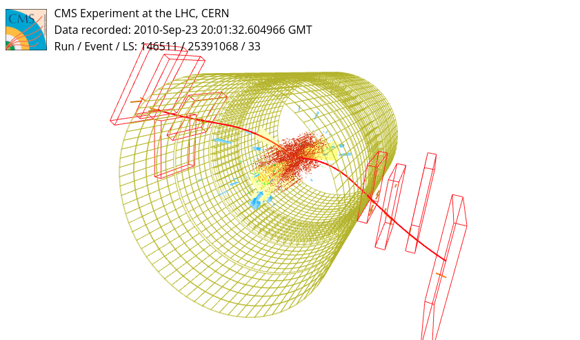

17 Lab: Spark 2, DataFrames and the dimuon spectrum
- Notebook:
code/spark/notebooks/Lecture2.ipynb(solutions:Lecture2_solutions.ipynb) - Stack: same as Spark 1
- Theory: Apache Spark → DataFrame
- You will: build DataFrames in several ways, then run a full physics analysis: load CMS open data, filter, flatten nested records, compute the dimuon invariant mass, and compare data with simulation
17.1 The idea behind it
- Schema-aware processing. Once Spark knows the columns and types, it can optimise your query (the Catalyst optimiser): push filters before joins, read only the needed columns, generate efficient JVM code. The same idea underlies SQL databases (MySQL lab), now applied to distributed files.
- Declarative over imperative. With RDDs you say how (call this lambda on every element); with DataFrames you say what (filter, group, aggregate) and Spark decides how. Everything you write in Python is a plan; execution stays in the JVM unless you force Python code in with UDFs.
- Physics analysis is an ETL pipeline: Extract (read raw events), Transform (select, flatten, compute features), Load/reduce (histograms). The same shape appears in industry pipelines.
17.2 Why DataFrames
An RDD is a distributed list of arbitrary Python objects: Spark cannot see inside them, so it cannot optimise anything. A DataFrame is a distributed table: named columns with types (a schema). Knowing the structure lets Spark plan the query (the Catalyst optimiser), store data column-wise, and run most operations inside the JVM without touching Python. Underneath, it is still partitions of an RDD (df.rdd), so everything from Spark 1 about laziness, partitions, collect and persist still applies.
The session is the same as before, with two extra settings that switch on Apache Arrow for moving data between the JVM and Python (used by toPandas() and pandas UDFs):
.config("spark.sql.execution.arrow.pyspark.enabled", "true")
.config("spark.sql.execution.arrow.pyspark.fallback.enabled", "false")17.3 Creating DataFrames
| From | How | Schema |
|---|---|---|
list of Row(a=1, b=2., …) |
spark.createDataFrame([...]) |
inferred from the Rows |
| list of tuples | spark.createDataFrame([...], schema='a long, b double, …') |
given explicitly |
| a pandas DataFrame | spark.createDataFrame(pandas_df) |
from pandas dtypes |
| files | spark.read.format('json').load(path) |
inferred or given |
an RDD of Rows |
rdd.toDF() |
inferred |
df.show() prints rows (an action); df.printSchema() prints the structure (no job).
The toDF() route is the general escape hatch: when the file format is not supported natively, parse it with RDD code (as in Spark 1), produce Row objects, and convert.
pyspark.pandas offers a near-identical pandas API on top of Spark (ps.DataFrame(...)). It is handy for porting pandas code, but not everything is implemented, and some pandas habits are expensive when distributed. For example, there is no natural row order across partitions, and enforcing one means a full sort. The lab uses the regular PySpark API.
17.4 The analysis: dimuon invariant mass
The dataset is a small sample of CMS 2010 events (CERN Open Data), already converted to JSON, plus matching Monte Carlo simulation. Each record has nMuon, sample ("data" or "mc") and a nested array Muons, where each muon has E, px, py, pz, charge.

The physics: when a particle decays into two muons of opposite charge, the invariant mass of the pair, \(M = \sqrt{E^2 - |\vec p|^2}\) with \(E, \vec p\) summed over both muons, peaks at the parent’s mass. In this range that means the Z boson at ~91 GeV.
17.4.1 Step 0: load and inspect
df = spark.read.option("inferTimestamp", "false").option("prefersDecimal", "false") \
.format('json').load('/mapd-workspace/datasets/lecture2/dimuon/*.json')
df.printSchema()
df.groupBy('sample').count().show()Reading is lazy too: Spark only samples the files to infer the schema. Look at the schema closely: Muons is array<struct<...>>, so the data is not flat, and dealing with that is half the exercise.
Every later action would re-read the JSON from disk, so the solution caches it:
df = df.persist() # NOT in place: without the assignment df still reads from files
df.count() # trigger it17.4.2 Step 1: aggregate on the cluster, plot locally
Histogram of muons per event, data vs MC:
num_muons = df.groupBy('sample', 'nMuon').count().sort('nMuon').toPandas()This is the pattern for the whole lab: the cluster does the heavy aggregation, and only a small table comes back (toPandas(), which is fast thanks to Arrow) for matplotlib. toPandas() has the same danger as collect(): never call it on the raw dataset.
17.4.3 Step 2: filter and flatten
Keep events with exactly two muons. These are equivalent, so use whichever reads best:
from pyspark.sql.functions import col
df[df['nMuon'] == 2]
df.where(col('nMuon') == 2) # where == filter
df.filter("nMuon == 2") # SQL expression string
df.createOrReplaceTempView("dimuon_df_table")
spark.sql("SELECT * FROM dimuon_df_table WHERE nMuon = 2") # plain SQLAll four produce the same plan, because the optimiser sees through the syntax.
Flattening turns the nested array into ordinary columns:
dimuon_flat = (
dimuon_df.select(col('sample'), col('nMuon'), col('Muons')[0], col('Muons')[1])
.withColumn('E1', col('Muons[0].E')) .withColumn('px1', col('Muons[0].px'))
.withColumn('py1', col('Muons[0].py')) .withColumn('pz1', col('Muons[0].pz'))
.withColumn('c1', col('Muons[0].charge'))
# ... same for muon 2 ...
.drop('Muons[0]', 'Muons[1]')
)select chooses columns, withColumn(name, expr) adds or replaces one, and drop removes them. Each returns a new DataFrame, since DataFrames are immutable.
17.4.4 Step 3: new features (native functions vs UDFs)
Opposite charge, then the four-momentum of the pair and its mass, using column expressions:
from pyspark.sql.functions import sqrt
dimuon_flat = (dimuon_flat.where(col('c1') != col('c2'))
.withColumn('E', col('E1') + col('E2'))
.withColumn('px', col('px1') + col('px2')) # ... py, pz
.withColumn('M', sqrt(col('E')**2 - (col('px')**2 + col('py')**2 + col('pz')**2))))The notebook then computes the same mass in two other ways, to compare the cost:
| Way | Code | What runs where |
|---|---|---|
| native column functions | sqrt(col(...) ...) |
entirely in the JVM, optimised, so fastest |
| Python UDF | @udf('float') def m(E, px, py, pz): return math.sqrt(...) |
rows are shipped one by one to a Python process and back, so slowest |
| pandas UDF | @pandas_udf('float') def m(E: pd.Series, ...) -> pd.Series: return np.sqrt(...) |
whole batches go to Python via Arrow and are processed vectorised with numpy, a good middle ground |
The rule: use a native function if one exists, a pandas UDF if you need custom Python, and a plain UDF only as a last resort. The same comparison is repeated for an aggregation (mean energy per sample): native groupBy('sample').mean() vs groupBy('sample').agg(mean_udf(col('E'))) with a pandas UDF that returns a scalar.
17.4.5 Step 4: rediscover the Z boson
The histogram is computed on the cluster with the RDD histogram from Spark 1, so only bin counts travel:
bins, counts = dimuon_flat.where(col('sample') == 'data').select('M') \
.rdd.map(lambda r: r.M) \
.histogram(list(np.arange(0, 150, 4)))Repeat for mc, then plot data as points with \(\sqrt{N}\) error bars over the simulation as a filled histogram. The full range (log scale) shows several resonances; zooming into 70–115 GeV with 0.5 GeV bins shows the Z peak and where the simulation disagrees with data.
A selection to improve agreement. The transverse momentum of the pair, \(p_T = \sqrt{(p_{x1}+p_{x2})^2 + (p_{y1}+p_{y2})^2}\), computed with a pandas UDF (np.hypot), then a boolean column with when/otherwise, the DataFrame version of an if/else:
from pyspark.sql.functions import when
dimuon_flat = dimuon_flat.withColumn("pT", candidate_pt(col('px1'), col('py1'), col('px2'), col('py2'))) \
.withColumn("highpt", when(col('pT') > 30, True).otherwise(False))Plotting low-\(p_T\) and high-\(p_T\) candidates side by side shows how the selection changes the background and the data–MC agreement.
In the solutions, the pandas_udf candidate_pt declares its parameters as (px1, px2, py1, py2) but is called with (px1, py1, px2, py2). Arguments are matched by position, so inside the function px2 is actually py1. Write the signature in the same order you call it.
17.5 On a real cluster
- File formats matter more than code. JSON is convenient but slow (text, parsed row by row, schema inferred). Real pipelines convert once to Parquet: columnar, compressed, with the schema stored inside, so a query reading 2 of 50 columns reads ~4% of the data.
df.write.parquet("s3a://bucket/dimuon/", partitionBy=["sample"])thenspark.read.parquet(...). - Partitioned storage (
partitionBy) lets Spark skip whole directories when you filter on that column (partition pruning). spark.sql(...)and the DataFrame API are interchangeable, so data teams often expose tables to SQL users through a metastore (Hive, Unity Catalog) on top of the same files.- UDF cost scales with data: a Python UDF that is “a bit slower” on this sample can dominate the bill on terabytes. Check the physical plan with
df.explain().
- DataFrames = RDD + schema; the schema is what allows optimisation.
- Filters can be written as pandas-style indexing,
where/filteror SQL: same plan, so pick the most readable. - Nested data →
select+withColumn+dropto flatten. - Prefer native column functions > pandas UDFs > Python UDFs.
- Aggregate on the cluster, then
toPandas()orhistogramonly the small result.